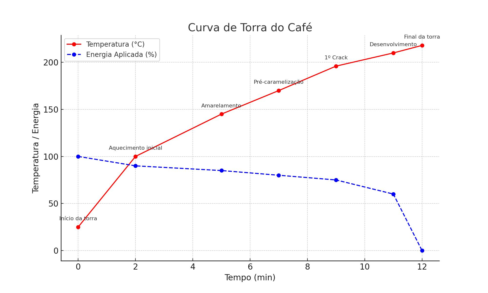

Café especial é definido por sua qualidade superior, com pontuação acima de 80 pontos na escala da Specialty
Coffee Association (SCA).
Esse tipo de café é cultivado em condições ideais e passa por rigorosos controles de qualidade desde a lavoura até
a xícara.
O café especial é cultivado em regiões de altitude, com solos ricos e práticas sustentáveis. As variedades mais
valorizadas incluem Arábica (como Bourbon, Typica, Geisha) por sua complexidade sensorial.
🌍 Principais países produtores de café especial
🇧🇷 Brasil – 61 milhões de sacas/ano
🇨🇴 Colômbia – 11,5 milhões de sacas/ano
🇪🇹 Etiópia – 8,3 milhões de sacas/ano
🇭🇳 Honduras – 6,2 milhões de sacas/ano
🇬🇹 Guatemala – 3,6 milhões de sacas/ano
☕ Maiores consumidores per capita
🇫🇮 Finlândia – 12 kg/ano
🇳🇴 Noruega – 9,9 kg/ano
🇮🇸 Islândia – 9 kg/ano
🇩🇰 Dinamarca – 8,7 kg/ano
🇸🇪 Suécia – 8,2 kg/ano
🇧🇷 Brasil no ranking de consumo
O Brasil é o maior consumidor de café do mundo em volume, mas ocupa a 14ª posição em
consumo per capita, com cerca de 6,1 kg por pessoa ao ano.
A torra do café transforma os grãos verdes em grãos aromáticos e complexos por meio de reações térmicas e
químicas. A curva de torra influencia diretamente o sabor, corpo, acidez e doçura da bebida final.
🔬 Reações químicas envolvidas na torra
Reação de Maillard: É uma reação entre açúcares redutores (como glicose e frutose)
e aminoácidos presentes nos grãos. Ela começa a ocorrer por volta de 140 °C e é responsável por boa parte
do aroma e cor marrom do café torrado. Produz centenas de compostos voláteis que contribuem para notas de caramelo,
chocolate, nozes, etc.
Exemplo simples:
Quando você coloca cebola numa frigideira quente, ela começa a dourar e exalar um cheiro adocicado — isso também é Maillard.
Caramelização: Envolve a decomposição térmica dos açúcares, especialmente sacarose, sem a presença de
aminoácidos. Acontece em temperaturas entre 160 °C e 190 °C. Produz compostos que reforçam as notas doces,
de caramelo, mel ou até frutas secas, dependendo da intensidade da torra.
Exemplo simples:
Aquele cheiro e cor do açúcar derretendo para virar calda de pudim é resultado da caramelização.
Pirólise: É a quebra térmica de moléculas complexas em moléculas menores, sem a presença de oxigênio.
Acontece geralmente acima de 200 °C e marca o momento onde os grãos “estouram” (o primeiro crack).
Ela contribui com notas mais intensas e amargas, e é responsável pela liberação de CO₂ e outros gases.
Exemplo simples:
Ao torrar um pedaço de pão até quase queimar, ele libera cheiro forte, escurece rapidamente e fica quebradiço — sinais de pirólise.
Formação de Gases Voláteis (Desgaseificação)
Durante a torra, formam-se diversos gases voláteis, principalmente dióxido de carbono (CO₂). Eles ficam presos nos grãos
e começam a ser liberados após a torra. Esse fenômeno influencia na frescor do café e no tempo ideal de descanso (degassing),
antes da extração.
Exemplo simples:
Já notou que café recém-torrado borbulha muito ao ser moído e coado? É o CO₂ escapando rapidamente.
Perda de Umidade e Reações Endo/Exotérmicas
Os grãos crus têm cerca de 10-12% de umidade. Essa água evapora ao longo da torra, tornando o grão mais leve e oco.
Em paralelo, há reações endotérmicas (absorvem calor, como a evaporação da água) e exotérmicas (liberam calor, como a quebra de moléculas).
Isso influencia diretamente o controle do perfil térmico do processo.
Exemplo simples:
Ao assar uma batata no forno, ela vai desidratando e depois escurece e doura por fora, mostrando uma combinação dessas reações.
Degradação dos ácidos clorogênicos: Os ácidos clorogênicos são antioxidantes presentes em abundância no café verde.
Durante a torra, eles se degradam parcialmente, formando ácido cafeico e ácido quínico, que contribuem para a acidez
e amargor característicos de torra média a escura.
Exemplo simples:
Imagine o sabor de um café mais leve e ácido (torra clara) versus um mais amargo (torra escura): a diferença está na degradação desses ácidos.
Conclusão
Essas transformações não ocorrem de forma isolada, mas em cadeia, e cada etapa do processo de torra precisa ser controlada
com precisão para acentuar os atributos desejados no café. É por isso que o perfil sensorial de um grão depende
tanto da curva de torra quanto da matéria-prima usada.
📈 Exemplo de Curva de Torra
Segue uma simulação de torra com controle de variáveis importantes:
Tempo (min)
Temperatura (°C)
Fluxo de Ar
Energia Aplicada (%)
Evento
0
25
Médio
100
Início da torra
2
100
Médio
90
Aquecimento inicial
5
145
Médio
85
Amarelamento
7
170
Alto
80
Pré-caramelização
9
196
Alto
75
1º Crack (expansão)
11
210
Alto
60
Desenvolvimento
12
218
Alto
0
Final da torra

Fonte: SCA (Specialty Coffee Association), livros de química do café, e experiências de mestres
de torra.
Pontuação do Café
📋 Avaliação do Café Verde (Green Grading)
A SCA estabelece um protocolo rigoroso para avaliar o café antes da torra, conhecido como Green Grading. O avaliador analisa 350 g de grãos crus e classifica com base nos seguintes critérios:
Defeitos Primários: grãos pretos, ardidos, fermentados, etc.
Defeitos Secundários: cascas, grãos quebrados, cortados, verdes, etc.
Umidade: ideal entre 10% e 12%
Densidade: cafés de maior qualidade tendem a ter maior densidade
Tamanho da peneira: tamanhos uniformes favorecem uma torra mais precisa
Um café é considerado Especial se tiver zero defeitos primários e no máximo 5 defeitos secundários nessa amostra.
☕ Avaliação Sensorial (Cupping)
Após a torra leve (SCA exige torra padrão para prova), o café é avaliado sensorialmente em sessões de cupping (prova de café) com base em 10 critérios:
Fragrância/Aroma
Sabor
Pós-sabor
Acidez
Corpo
Uniformidade
Doçura
Equilíbrio
Ausência de defeitos
Nota geral (Overall)
Cada item recebe uma nota de 6 a 10 pontos, sendo a soma deles a pontuação final do café. Um café especial deve pontuar no mínimo 80 pontos.
🎨 Roda de Aromas e Sabores do Café
A Roda de Aromas da SCA é uma ferramenta usada por profissionais para descrever com precisão os sabores presentes no café. Ela é baseada em centenas de compostos aromáticos identificados em cafés especiais.
A extração correta revela todo o potencial do café especial. Métodos manuais e pressurizados proporcionam
diferentes perfis sensoriais. A seguir, conheça os principais:
☕ Métodos de preparo
Clever: Criado nos anos 2000 por fabricantes taiwaneses, combina imersão total com filtragem
por papel. Oferece corpo médio, doçura destacada e baixa acidez. Ideal para iniciantes pela facilidade e
consistência.
Chemex: Desenvolvido em 1941 por Peter Schlumbohm, químico alemão. Usa filtros de papel espesso
que resultam em uma bebida limpa, leve e com acidez ressaltada. Design elegante e funcional.
Koar: Método brasileiro criado por Marcus Viana em 2019. Possui ranhuras que aumentam a
extração uniforme. Produz café encorpado, doce e com finalização prolongada.
V60: Criado pela empresa japonesa Hario em 2004. Seu formato cônico e ranhuras espirais
favorecem controle de fluxo e extração precisa. Proporciona bebida limpa, com acidez e notas florais/frutadas.
Aeropress: Inventado em 2005 por Alan Adler, engenheiro americano. Combina pressão manual com
imersão curta. Versátil, produz café encorpado com baixa acidez e perfil suave.
French Press: Patenteada em 1929 por Attilio Calimani, um designer italiano. Método de imersão
total com êmbolo metálico. Entrega café denso, oleoso e com corpo elevado.
Espresso: Desenvolvido na Itália no início do século XX, com patente de Luigi Bezzera em 1901.
Utiliza água pressurizada (9 bar) em alta temperatura por curto tempo (25–30s). Resulta em bebida intensa,
encorpada, com crema e grande complexidade sensorial.
Estas são as bebidas tradicionais preparadas a partir do espresso, cada uma com características distintas:
Espresso: Uma dose concentrada de café (25–30 ml) extraída sob alta pressão (9 bar) em cerca de
25 segundos. É a base para muitas outras bebidas.
Ristretto: Uma versão mais curta do espresso, utilizando a mesma quantidade de café, mas com
metade da água, resultando em uma bebida mais concentrada e encorpada.
Macchiato: Espresso "manchado" com uma pequena quantidade de leite vaporizado, oferecendo um
equilíbrio entre a intensidade do café e a suavidade do leite.
Cappuccino: Composto por 1/3 de espresso, 1/3 de leite vaporizado e 1/3 de espuma de leite.
Tradicionalmente servido em uma xícara de 150 ml.
Latte: Uma dose de espresso com uma maior proporção de leite vaporizado e uma fina camada de
espuma. Geralmente servido em copos de 240 ml ou mais.
Flat White: Originário da Austrália e Nova Zelândia, é semelhante ao latte, mas com menos leite
e uma microespuma mais fina, resultando em uma bebida mais intensa.